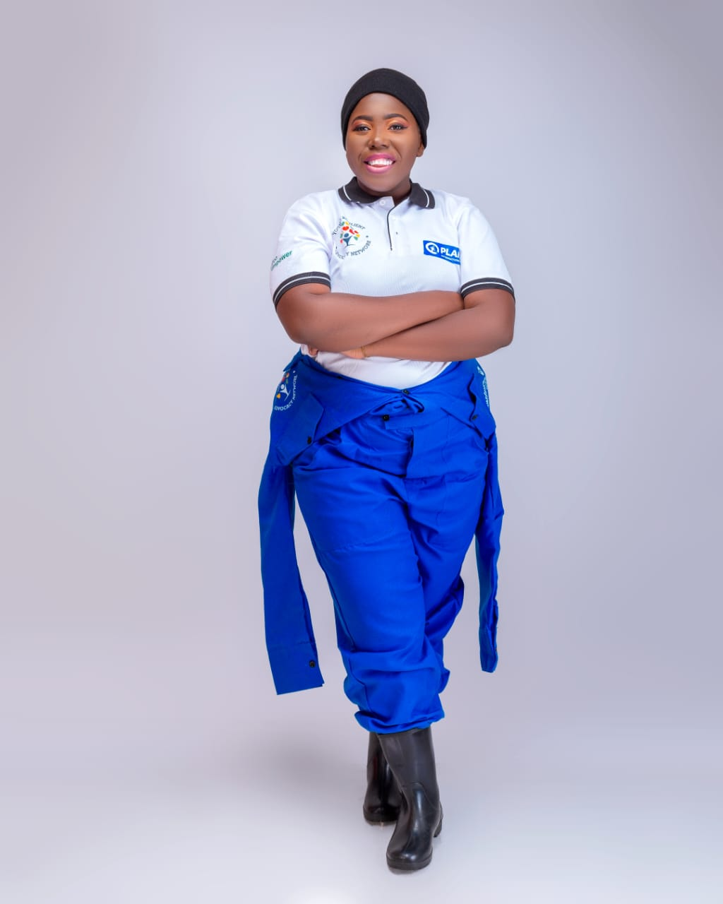
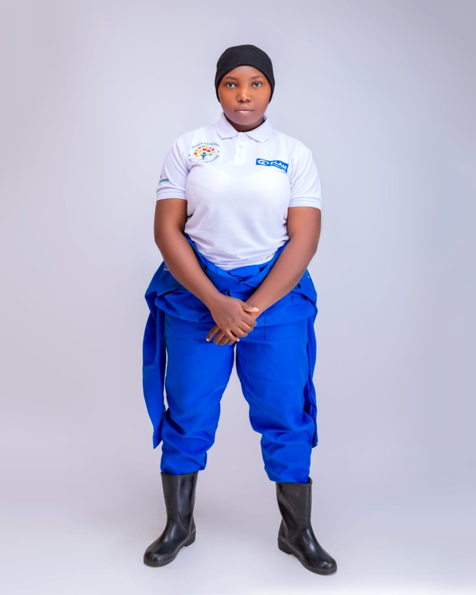
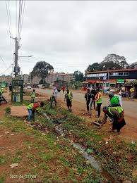

Raising Voices, Building Justice
From Mathare to all of Kenya, we speak out against police brutality and fight for equality, healing, and hope.
About Us
Voice for Justice is a platform founded in Mathare, Nairobi, by Catherine Kabiru. Our mission is to document untold stories of those affected by police brutality and social injustice in Kenya. We aim to empower communities through advocacy, education, and support, ensuring every voice is heard and justice is pursued.
Our vision is a Kenya where every individual lives with dignity, safety, and opportunity, free from fear and oppression. We engage with survivors, families, and community leaders to provide counseling, legal advocacy, and educational programs that transform awareness into action.
We prioritize transparency, credibility, and ethical storytelling, preserving the dignity of each individual while advocating for justice, policy reforms, and societal awareness.
By engaging with Voice for Justice, whether as a community member, activist, supporter, or researcher, visitors contribute to a growing movement dedicated to truth, justice, and empowerment.
Story from Mathare
I’m Catherine Kabiru, from Mathare, one of Nairobi’s largest informal settlements. Our community faces immense challenges, including police brutality, harassment, poverty, and social inequality.
Through Voice for Justice, we document stories to preserve memory and ensure accountability. Each story shared represents a real life, a parent, a sibling, or a neighbor affected by injustice.
By bringing these stories to light, we hope to foster empathy, raise awareness, and mobilize resources for affected communities. Every narrative contributes to a larger movement that demands fairness, equality, and human rights.
.png)
Police Brutality in Kenya
Police brutality in Kenya, particularly in informal settlements such as Mathare, Dandora, and Kayole, remains a serious challenge. Residents experience arbitrary arrests, harassment, and violence, with minimal accountability. Victims’ stories are often ignored or dismissed, leaving families grieving without justice.
Voice for Justice provides a platform where these incidents are documented, verified, and shared to raise awareness locally and internationally. We work closely with human rights organizations, legal advocates, and community leaders to ensure that each case contributes to advocacy efforts and policy reform. Our goal is to protect the vulnerable, amplify voices, and demand transparency and accountability from authorities.
We believe that documenting and sharing these stories empowers communities, encourages civic engagement, and fosters societal pressure for reforms. By highlighting the human impact of violence, Voice for Justice transforms statistics into compelling narratives that inspire action and solidarity.
Mental Health Support
Trauma caused by violence and injustice has deep psychological effects on individuals and communities. Anxiety, depression, and post-traumatic stress are common among survivors and their families. Voice for Justice prioritizes mental health by providing access to counseling and psychological support services.
We organize community-based counseling programs, workshops, and support groups to help individuals process their experiences and rebuild resilience. Our approach ensures confidentiality, accessibility, and culturally sensitive interventions. By addressing mental health needs alongside advocacy, we aim to support holistic healing and empower communities to regain confidence and emotional strength.
We believe that mental well-being is a foundation for social justice. When communities are emotionally supported, they are better equipped to engage in advocacy, protect their rights, and build sustainable change. Our mental health initiatives complement our broader mission of justice and empowerment, recognizing that healing is an essential part of resilience.
Empowerment Programs
Voice for Justice focuses on empowering youth and communities through education, storytelling, and advocacy initiatives. We organize workshops, mentorship programs, and digital literacy campaigns to equip individuals with the skills and knowledge to speak up, protect themselves, and participate in social justice efforts.
Through these programs, young people learn leadership, civic engagement, and advocacy techniques that enable them to contribute meaningfully to their communities. Empowerment also involves providing platforms for voices that are often unheard, ensuring that community members can share experiences, highlight challenges, and propose solutions.
Our programs are inclusive, accessible, and designed to create long-term impact. By fostering critical thinking, collaboration, and resilience, Voice for Justice nurtures a generation of informed, capable, and confident citizens who drive change at the grassroots level.
Meet Our Team
Dedicated professionals committed to justice, mental health, and community empowerment.
Catherine Kabiru
Founder & Director
Catherine leads the organization and ensures the community's voices are amplified. She oversees programs, advocacy efforts, and community engagement initiatives to transform pain into action and empowerment.

Damaris Nyahondo
Data Analyst
Damaris manages and analyzes community data and reports. Her work ensures accurate documentation of incidents, helping the organization and partners make informed advocacy decisions.

Mariam Kiyao
Researcher
Mariam conducts research on systemic issues, gathers insights, and supports advocacy campaigns. Her findings guide program development and policy interventions.
J. Uaga
Advocate
J. Uaga provides legal support and advocacy, ensuring victims’ rights are protected. He works to hold authorities accountable and educate the community on their rights.
Community Map — Nairobi Justice Zones
Data & Research
At Voice for Justice, data and research form the backbone of our advocacy work. Every initiative we undertake is guided by meticulous research, evidence collection, and analysis. Our goal is not just to document incidents, but to understand the patterns, causes, and consequences of police brutality and social injustices within communities like Mathare, Dandora, and Kayole.
Catherine Kabiru, our Founder and Director, provides overall leadership and vision for our data and research efforts. Catherine ensures that every project aligns with our mission to empower communities, amplify their voices, and inform policy changes. She supervises the research workflow, reviews findings, and ensures that our reports and statistics are both accurate and ethically collected. Her role is crucial in guiding the team to ask the right questions, prioritize impactful studies, and communicate results effectively to stakeholders.
Damaris Nyahondo, our Data Analyst, is responsible for collecting, cleaning, and analyzing the raw data from the field. Damaris designs structured data collection tools, tracks reported incidents, and converts complex datasets into meaningful insights. Her analytical work enables Voice for Justice to identify trends in police brutality, understand which communities are most affected, and generate the charts and graphs you see on this site. By ensuring data accuracy and clarity, Damaris transforms community reports into evidence that can drive systemic change.
Mariam Kiyao, our Researcher, conducts in-depth field research and qualitative studies. Mariam interviews survivors, engages with families, and documents personal stories that provide context to the numerical data. She also investigates systemic issues, social dynamics, and policy shortcomings that contribute to recurring injustices. Her research forms the backbone of our advocacy campaigns, enabling the organization to highlight not only the numbers but the human impact behind every case.
J. Uaga, our Advocate, bridges the gap between data and legal action. J. Uaga examines reports of police brutality, verifies them against legal frameworks, and supports community members in taking legal action. He ensures that the research collected by Damaris and Mariam is actionable and can be presented in court or used to advocate for policy reform. By providing expert legal guidance, J. Uaga turns data into justice-oriented interventions, helping survivors and affected communities gain recognition, protection, and recourse.
Together, this team combines technical skills, research expertise, legal knowledge, and community engagement to create a comprehensive, evidence-based approach. The collaboration ensures that our programs are informed, accountable, and impactful. From raw data collection to field interviews and legal advocacy, each member’s contribution strengthens Voice for Justice’s ability to hold authorities accountable and support the communities we serve.


Our Impact